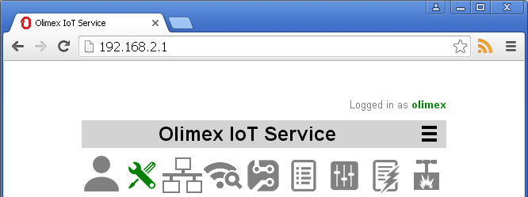
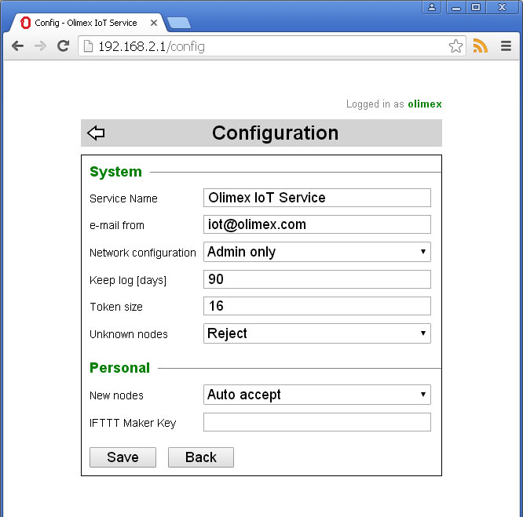

Back to OlimexIoT Help
To access the configuration dialog you should be already logged in OlimexIoT Server and then click on configuration icon in the main screen .
Here you can change various service configuration parameters.
System configuration parameters can be modified only if you are logged in as administrator. Otherwise they are shown as read-only.
Service Name - this name will be used in various e-mails send to the users.
e-mail from - this is the e-mail from which e-mails will be send to the users.
Network configuration - who can configure the network - all users or admins only
Keep log [days] - how long event log will be kept. If set to 0 no limit
Token size - size of the token if manual token creation is used
Unknown nodes - global policy for new nodes (nodes with unknown Token)
Personal configuration parameters can differ for each user.
New nodes - personal policy for new nodes
Continue with Manual node setup
Back to OlimexIoT Help